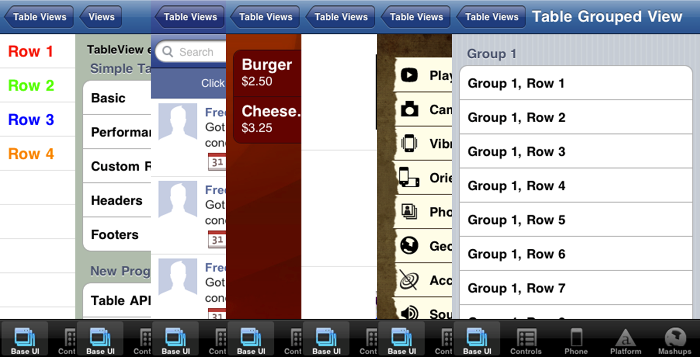
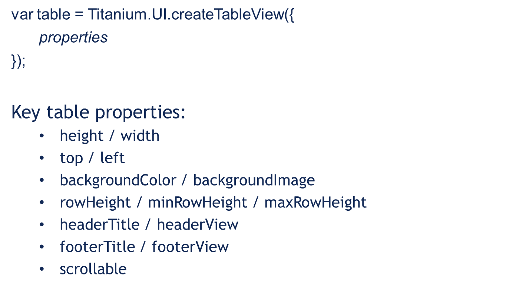
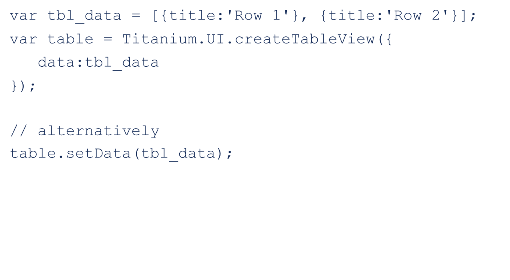
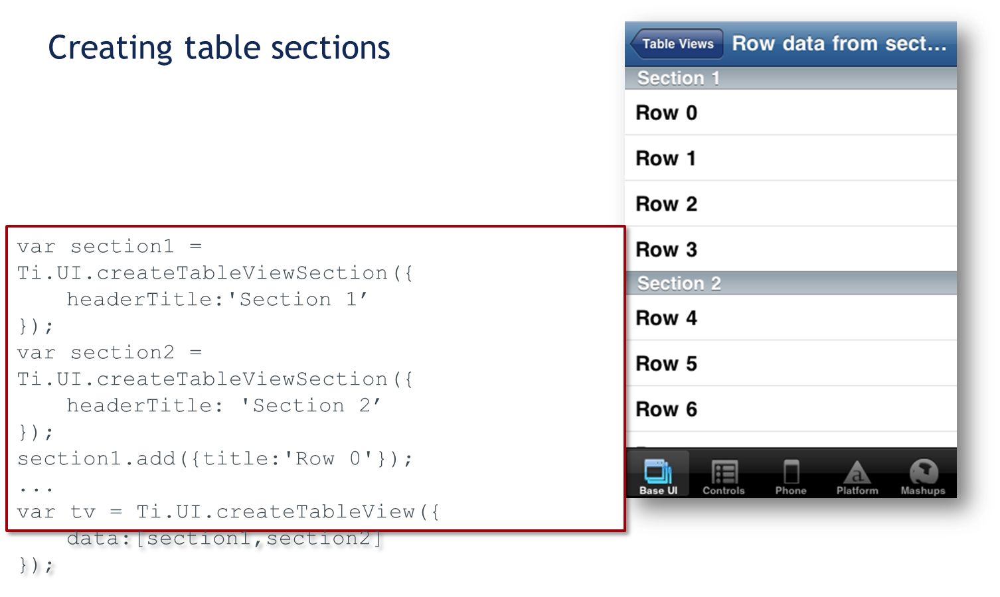
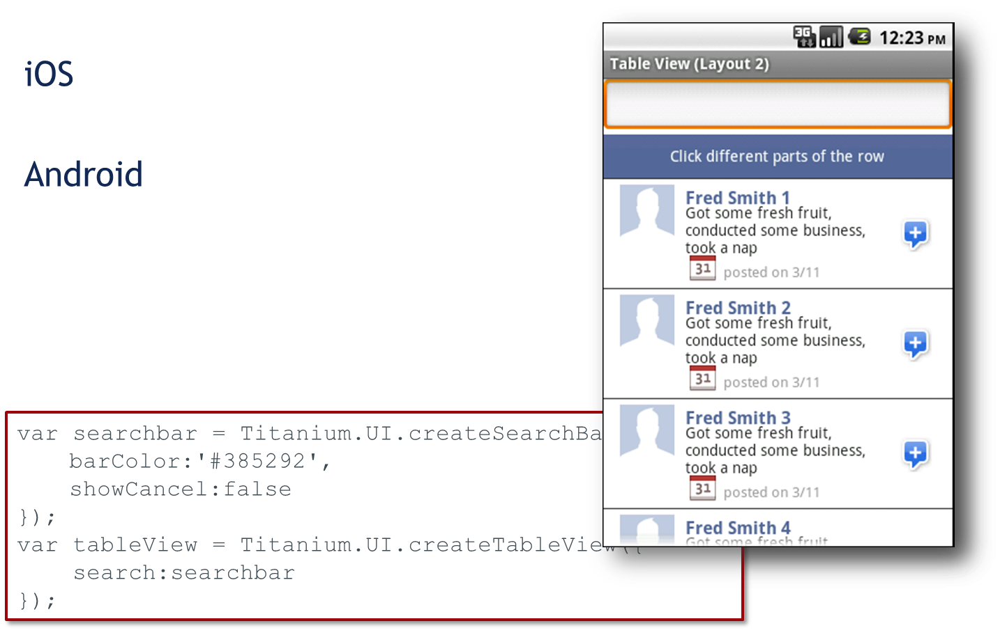
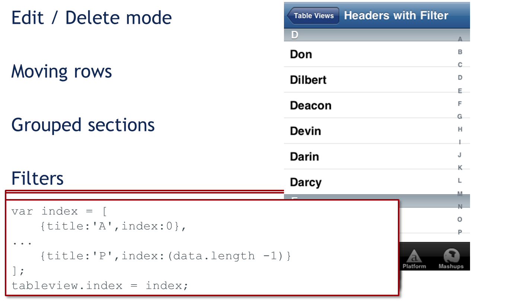
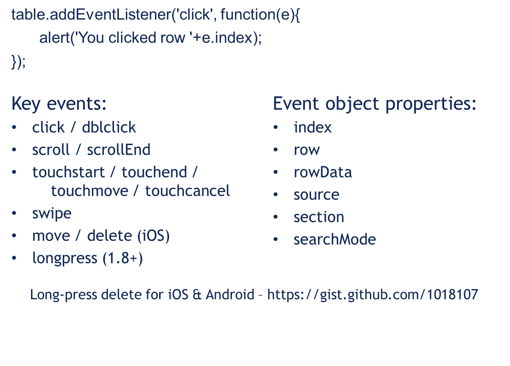

Module time: 60 mins(30 mins teaching, 30 mins for lab)
Agenda
- TableView Examples
- TableView Basics and Beyond
- Headers, Footers, and Sections
- Events and Extras
In this module, we’ll look at some table examples
review tableview basics then go a bit further into what you can do with tables
we’ll look at headers, footers, and sections
we’ll wrap up with another look at events as well as some cross platform continuous scrolling solution
Examples

Many options for formatting tables (seven total shown)
Basic TableView

This is probably all review from BNAPPs
Table Rows with Anonymous Objects

One option for adding rows is to use anonymous objects
Useful with JSON data pulled from a web service or database
TableViewRow Object

You can also create TableViewRow objects
Useful when you want to manipulate the row’s properties before/after adding to the table
Saves cumbersome means of accessing the object within the table’s data array
As of SDK 1.8, appendRow() accepts row object, dictionary, or array (of rows/dictionary objects)
Row Indicators

hasChild – indicates sub-table or additional rows
hasDetail – indicates a detail view or alert will appear when row is tapped (not supported on Android)
hasCheck – on/off or yes/no indicator
Basic Table and Row Properties

Formatting can be done with standard TableViewRow properties
First row has different background image than middle rows
Not labeled, but the row’s foreground (text) color also set
The “other information…” text is added as a label rather than a standard row property
Custom Table Rows

Add labels, views, images to your rows
Positioning: relative to top-left of row
Elements accessible via children[]
You can add labels, views, and images to create custom rows
Point out the three labels
Point out the image views
The “plus” image is set with the row’s rightImage property
Table Sections

Create sections, add rows to them
assign sections to table via an array added to the data property
Table Searching

Same code, but different looks
iOS Only Features

iOS only properties (table.editable = true) will be ignored on Android
You listen for the delete/move events and take action based on that
Table events

Generally, you’ll handle table events on the table rather than the rows or children
Determine which row clicked by using the e.row property instead
Titanium 1.8 adds support for native long-press event,gist workaround useful for older SDKs
Scroll Events - contentOffset (iOS only)
Scroll Events - firstVisibleItem, visibleItemCount, totalItemCount (Android only)
Dynamic scrolling Android workarounds
https://gist.github.com/903895
https://gist.github.com/810391
Use these events to create dynamic scrolling, also called continuous or infinite scrolling
See these gists as well as the Q&A forums for more info on creating cross-platform infinite scrolling solutions
Lab Goals
Create custom table
- doesn't fill entire viewport
- custom rows with backgrounds and child elements
- table event listeners that react differently depending on which child element receives the event
Demo and wiki URL
In this lab assignment, you will create a custom table that doesn’t fill the entire viewport. The table will contain customized rows with background images that differ based on the row’s location within the table. Each row will contain two images and two labels. When you tap a row, an event listener will determine if either of the images was the object that received the tap. If so, that image will be swapped with an alternate graphic.
Lab
For TiBountyHunter walkthrough, focus on TableView skinning, found in FugitiveTableView.js – show how we use custom background images for the row, and mix/match built-in properties like leftImage/rightImage and custom layout with adding a label